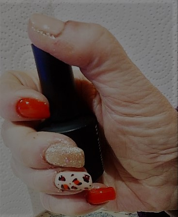
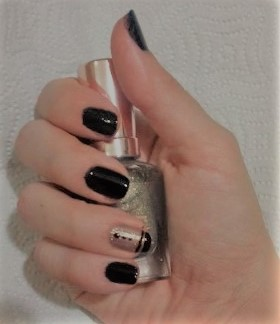
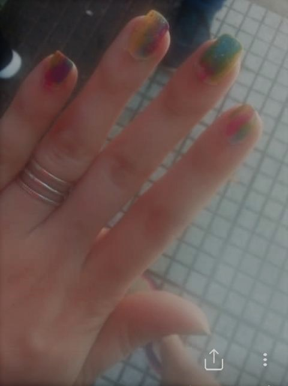
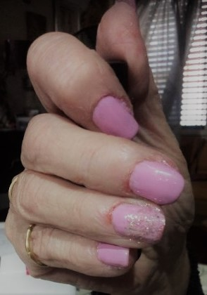
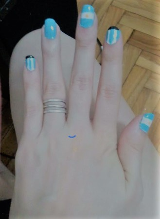
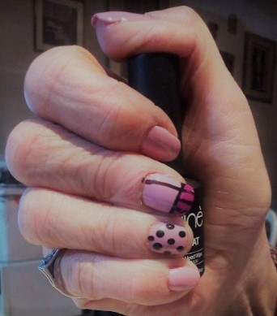

Home
Nail art
Contacto
My Designs

AnimalPrint Nails

Suit Nails

Coldplay Nails

Cute Pink Nails

Qatar2023 Nails

Pinup Pink Nails
Nail Art trends
Uñas 2023: las 33 últimas tendencias de manicura
Uñas color pastel: 15 manicuras perfectas para lucir esta primavera-verano
Las 30 manicuras francesas que más se llevan en 2023
¿Y si la manicura color cereza de Kate Middleton no fuera un acto de rebeldía ni romper con el protocolo real?
¿Cómo limar tus uñas segun la forma de tus manos?
El look de las uñas de las royals